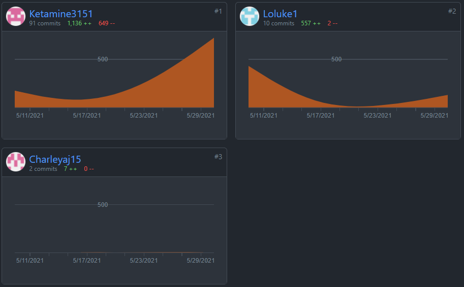

Group Communication
With assignment 3, we have decided to stick with the software used for our previous assignment. We are using Microsoft Teams for organising files,
meetings and communicating to each other. Through the use of Microsoft Teams, we have conducted meetings which are held at least once a week (usually two).
Independent work that each individual member conducts is also posted in Teams where it can be accessed and edited by all members.
Github
Overall, our utilisation of GitHub has been far more surgical and precice than in Assignment 2. The key difference is that we had our foundations
laid essentially from the start, and only needed to do substantial work on the site as the content became finalised in the final few days (and hours)
of the assessment. As such, our lines committed looks roughly like this:

Meetings
[15/05/21 4:33PM]
Attendees:
Luke Davis, Kevin Lam
Agenda:
Determine the work that has been completed by the team-members and
establish what has to be done to progress with certain sections such
as the group website.
Actions:
Luke: Work on the website structure and GitHub deployment.
Kevin: Work on the GitHub deployment, website, and TeamProfile section.
Link to the meeting
[22/05/21 2:25PM]
Attendees:
Luke Davis, Rohan Gagner, Jai Wells
Agenda:
Determine How each team-member is going with the project sections such
as the Project plan, Website and Prototype. Establish a deadline for
each section of the assignment.
Actions:
Luke: Progress on setting up Website and work on the project plan.
Rohan: Work on Jobs and Skills section and begin prototype.
Jai: Overview of the project; aim to begin documentation process.
Kevin: The design and elements for the website is done. Team profile and
project description is pretty much done as well. Polishing these.
Link to the meeting
[29/05/21 4:30PM]
Attendees:
Luke Davis, Kevin Lam, Rohan Ganger, Charle Yang
Agenda:
Finalize most of the sections of the report, make a strong action plan for
utilizing the time left to Add more details to all the sections and the
prototype.
Actions:
Luke: Work on GitHub and Website, Project plan section, time line and Project overview.
Rohan: Work on formatting the report and putting detail on the prototype.
Charle: Work on detailed description section of the report.
Kevin: Work on details of the Project Plan, finished the team’s profile and Tools section.
Link to the meeting